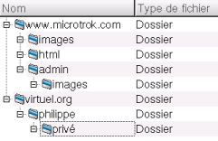

Chapitre 3. Comptes FTP
Introduction
Le FTP est un moyen pratique de pouvoir échanger des fichiers entre un serveur et une machine connectée à Internet. Pour cela, il faut disposer d'un compte FTP sur le serveur, constitué d'un nom d'utilisateur et d'un mot de passe.
Sur AlternC, vous pouvez créer des comptes FTP, en précisant le nom d'utilisateur, le mot de passe, et le dossier dans lequel sera connecté ce compte FTP. Ainsi, chaque compte pourra accéder à son dossier et ses sous-dossiers, en lecture et en écriture.
Par exemple, si vous disposez des dossiers suivants dans votre compte :

Vous pouvez créer, par exemple, un compte ftp pour philippe, que vous hébergez sur http://virtuel.org/philippe/ Pour cela, il suffit de cliquer sur "Comptes FTP" puis "Créer un compte FTP" et enfin, entrez les paramètres de connexion, à savoir, un nom d'utilisateur, un mot de passe, et un répertoire.
Philippe peut donc modifier les fichiers de son dossier en utilisant les paramètres suivants :
Serveur ftp : "virtuel.org" Nom d'utilisateur : "virtuel.org_philippe" Mot de passe : "philpas"